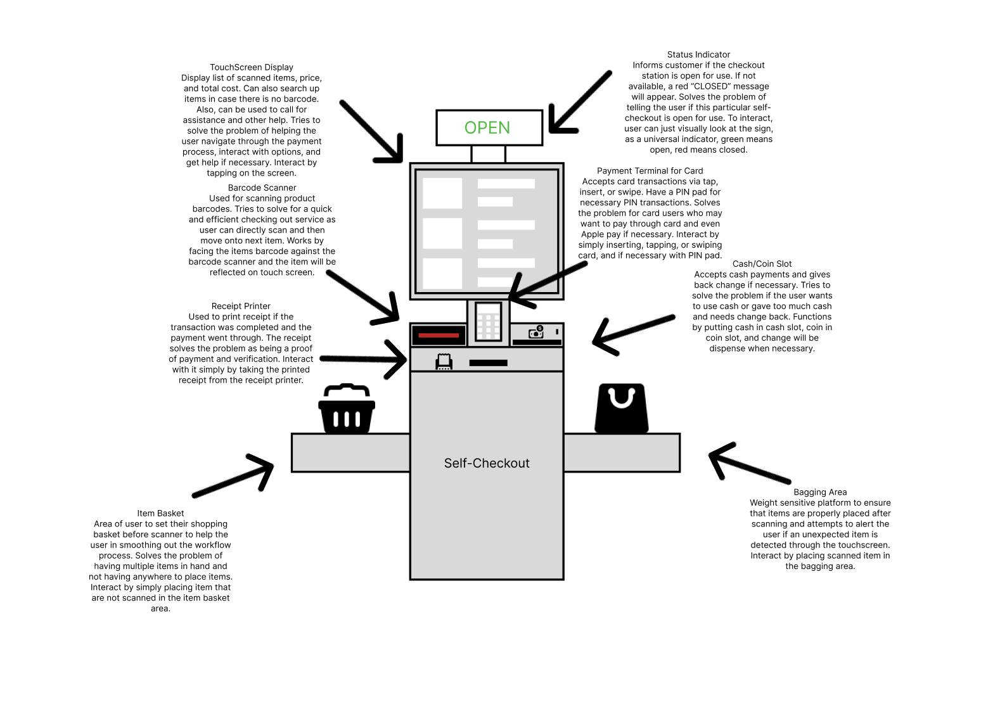
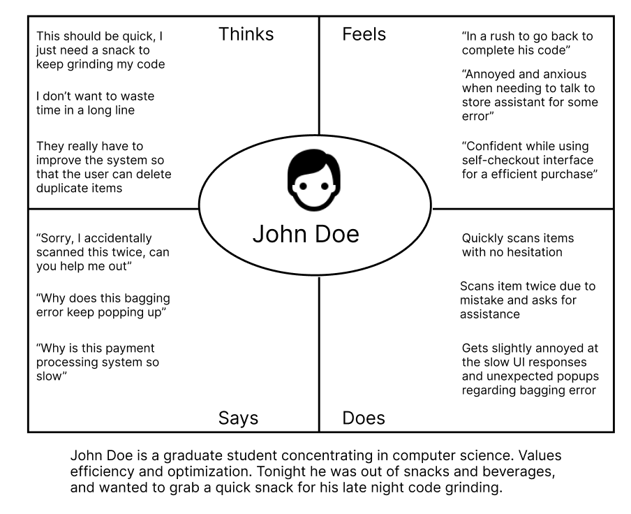
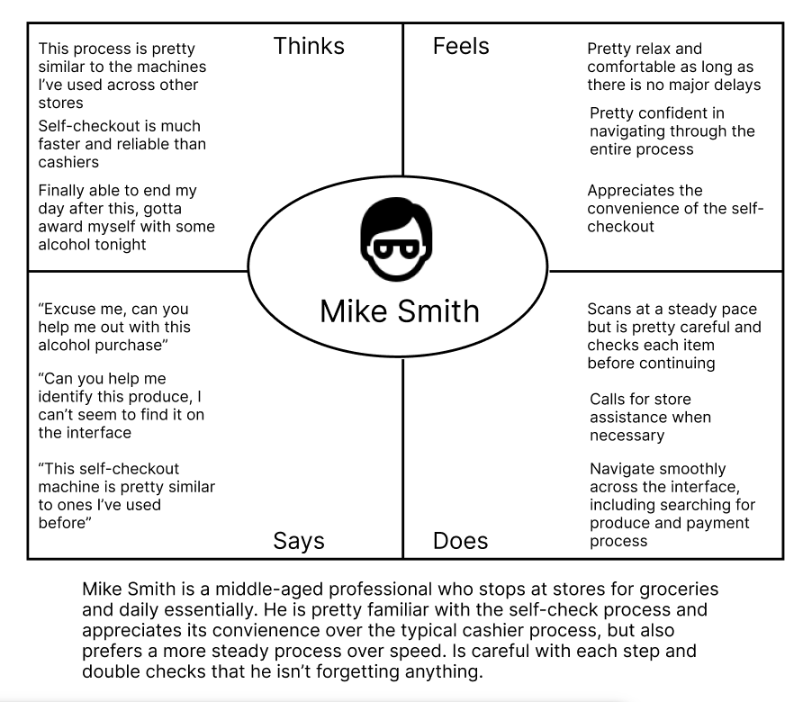
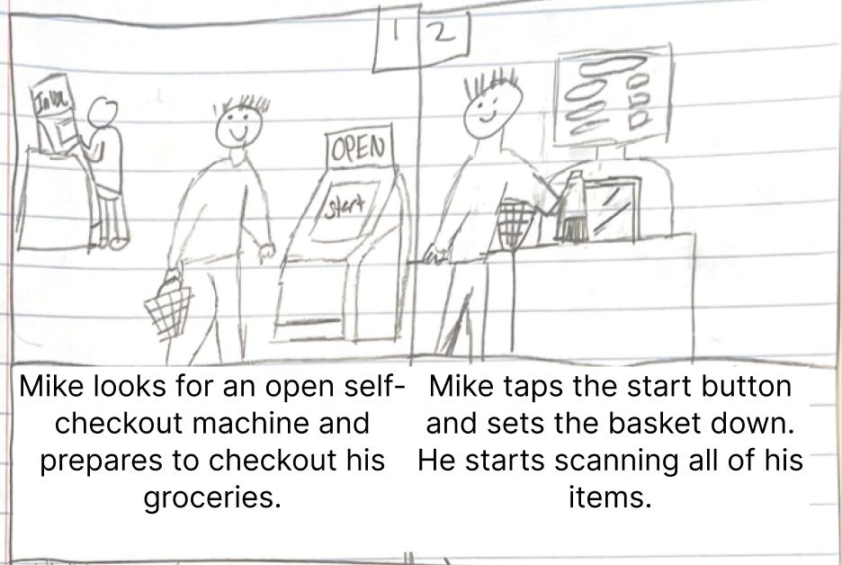
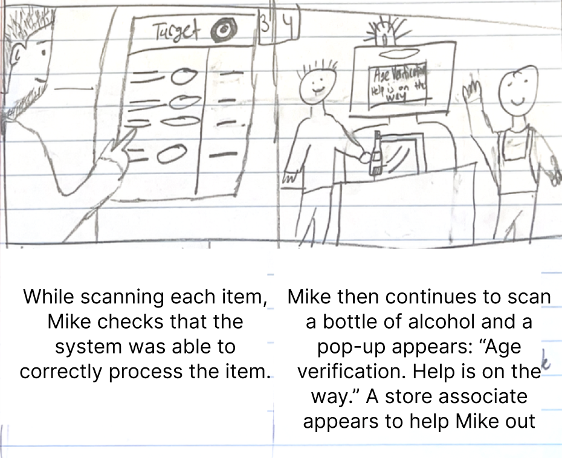
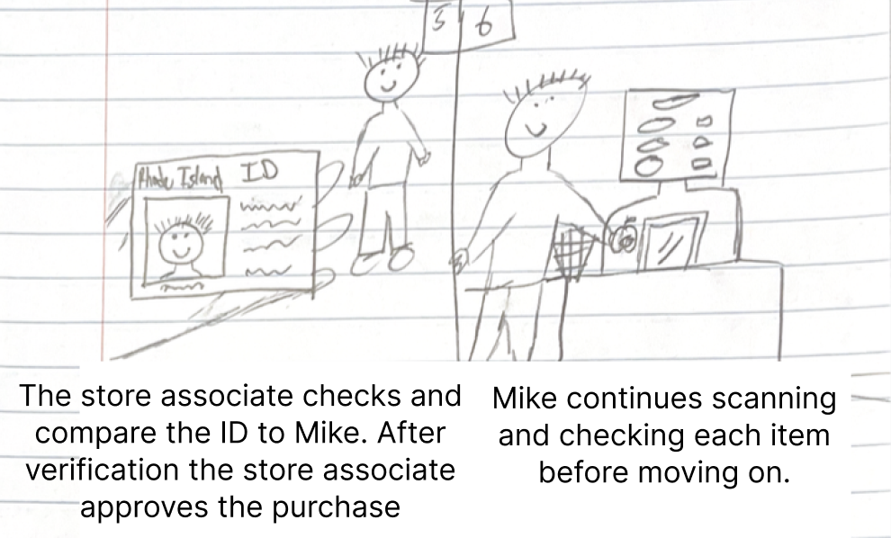
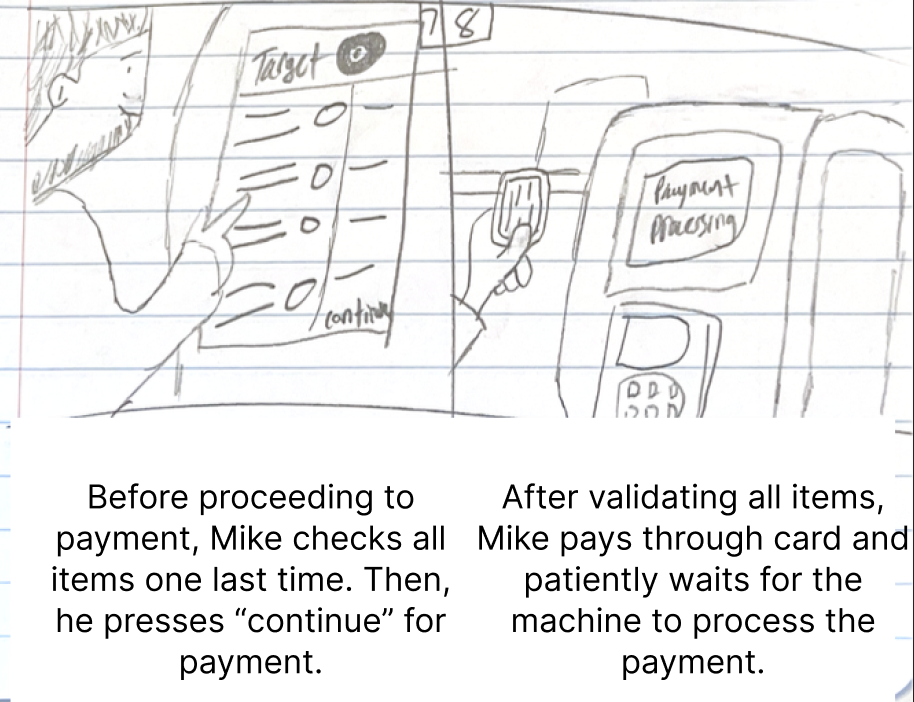
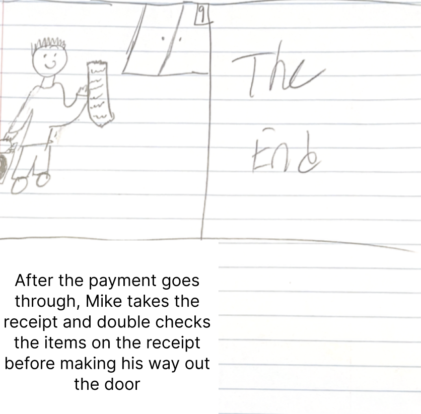

Personas
&&
Storyboarding

Overview
Self-Checkout Machines
- Objective: This project aims to identify key UX challenges in self-checkout kiosks by analyzing real-world user interactions. The focus is on understanding common pain points such as bagging area errors, slow touchscreen responsiveness, and the need for manual store assistance when purchasing restricted items.
- Methodology: The study involved conducting on-site observations and unbiased interviews with users actively interacting with self-checkout machines. The process included developing structured, neutral interview questions to gather insights into user expectations, experiences, and frustrations. These findings were then synthesized into user personas and a storyboard to visualize the user journey.
- Outcome: The project resulted in the creation of detailed user personas representing different types of self-checkout users, such as the efficient/younger shopper and the careful, methodical middle-aged user. Additionally, a storyboard was developed to illustrate the self-checkout experience, highlighting both seamless interactions and moments of user frustration. These insights can be used to improve self-checkout kiosk design for a more user-friendly and efficient experience.
Observations & Interviews
We gathered naturalistic observations and interviews to identify themes in user interaction with public kiosks.
Key Observations
- Users frequently faced bagging errors, even when placing items correctly.
- Age-restricted items always required a store associate’s approval, causing delays.
- Fast users sometimes double-scanned items and needed help reversing the error.
- Some users struggled finding certain produce or scanning loyalty cards.
Interview Questions
- What did you expect before using the self-checkout?
- Did anything confuse or frustrate you during the process?
- How does this interface compare to others you’ve used?
- Were there moments where you needed help or didn’t know what to do?
- What improvements would make this experience better?
User Personas
Empathy maps based on interviews & observations helped us model two key types of users.


Challenges Faced by John
- Frequent bagging errors.
- Interface lag during scanning/payment.
- Double-scans due to fast input.
Challenges Faced by Mike
- Slow navigation due to cautious behavior.
- Needed help verifying alcohol purchase.
Why John?
- Tech-savvy and fast-paced.
- Represents users focused on speed but prone to mistakes.
Why Mike?
- Detail-oriented and patient.
- Represents users who value reliability over speed.
Storyboard
This storyboard reflects Mike's experience from approach to completion.




